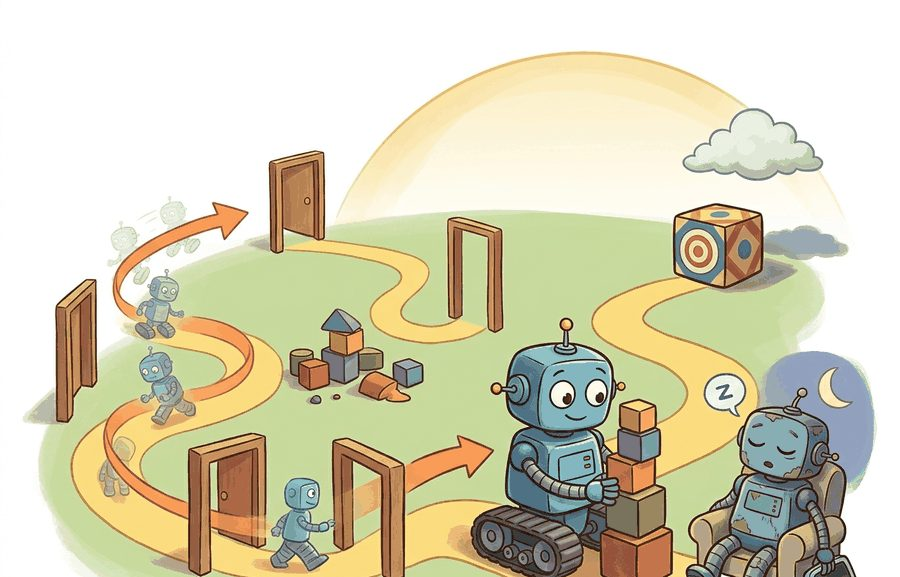
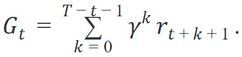

"The robot did the right thing eventually. The evaluator had already gone home."
A Time-Limited Agent

This section assumes familiarity with the reward signal introduced in section 2.4 and the observation-action loop from section 2.3. The discounted return formula developed here is the direct foundation for the Bellman equations in section 2.6. Trajectory structure under partial observability, where the agent cannot observe the full state within an episode, is taken up in section 2.7.
A delivery robot reaches the door two seconds after the human has walked away. Perfect navigation, zero reward. Time structure is not a bookkeeping detail; it determines what "success" even means for an embodied agent. Right now, the gap between simulated training and real deployment narrows or widens almost entirely on how well designers specify episode boundaries, discount factors, and horizon lengths. Get these wrong and the agent optimizes for the wrong timescale, stalls on infinite tasks, or ignores consequences that arrive a few steps too late. Here you will build the vocabulary and the math to define trajectories precisely, choose finite versus infinite horizons deliberately, and set discount factors that match the physical world your agent must act in.
Two robots run the exact same policy on the exact same task, yet one is scored a success and the other a failure, because one lab calls the episode finished after 200 steps and the other waits 1000. A robot policy is not only a mapping from observations to actions. It is behavior over time: starts, recoveries, repeated attempts, delayed rewards, timeouts, and failures that appear only after several transitions, and the time vocabulary in this section is what makes those two verdicts comparable. Figure 2.5 shows the closed loop that forces this temporal view: each consequence feeds back to become the next step's evidence, so rewards form a chained sequence rather than independent samples.
Episode boundaries matter for physical robots because hardware cannot "reset" between attempts the way a simulator can. Each boundary corresponds to a human repositioning the arm, charging the battery, or inspecting joints for damage. Too short an episode forces constant human intervention. Too long an episode accumulates joint stress or battery drain that corrupts later episodes. Get the boundary wrong and you train on different hardware conditions across episodes.
A reset signal delimits an episode by returning the environment to a valid starting distribution. In simulation this is instantaneous. On real hardware, a reset moves the robot to a start pose, confirms sensor readiness, and waits for actuators to reach a neutral state. The reset protocol is itself part of the episode definition. Two labs with different reset procedures run different tasks, even when the trajectory and reward code are identical.
The horizon is the number of time steps the agent's episode is defined to run for: a finite horizon caps the episode at $T$ steps (or ends it on a terminal condition, whichever comes first), while an infinite horizon has no predefined end and relies on the discount factor alone to keep the return finite. Time scale changes the problem. A short horizon favors quick local behavior. A long horizon exposes recovery, drift, and delayed harm. Together, horizon and gamma (the discount factor $\gamma \in [0,1]$, a number that scales how much each future reward counts relative to an immediate one, defined precisely in the Theory section below) determine the effective planning depth of the policy, and that depth should not erase future safety consequences. Figure 2.5A traces a single trajectory across an episode horizon and shows how this discount factor's exponential decay reshapes which future rewards drive the current decision.
A metric that ignores horizon, truncation, and trajectory structure is not measuring the same task the robot faces in deployment.
A trajectory can be written as $(o_0, a_0, r_1, o_1, a_1, r_2, ...)$ with status fields that mark termination or truncation. For a finite episode of length $T$, the discounted return from time $t$ is

Here $r_{t+k+1}$ is the reward received $k$ steps into the future, and $\gamma \in [0,1]$ controls how fast those future rewards shrink.The formula is a weighting rule, not a moral statement about the task. With rewards $[-0.1, -0.1, 1.0]$ and $\gamma=0.95$, the return is $-0.1 + 0.95(-0.1) + 0.95^2(1.0) = 0.708$. With $\gamma=0.5$, the same delayed success is worth only $0.100$. In embodied systems, that difference can decide whether the policy learns patient recovery or prefers a risky shortcut. In practice, a manipulation policy trained with $\gamma=0.5$ typically needs an order of magnitude more episodes (the exact count depends on the task and network) before it discovers that waiting for the grasp to stabilize pays off, compared to the same policy with $\gamma=0.95$, because each intermediate step now carries enough credit to guide the very first approach.
So far: a trajectory is a timestamped sequence of observations, actions, and rewards; the discounted return $G_t$ folds that sequence into one number using $\gamma$ to shrink distant rewards; and the size of $\gamma$ (not just the horizon length) decides whether a policy can even perceive a delayed reward as worth waiting for. The algorithm below turns that formula into a step-by-step procedure you can implement.
Input: trajectory $\tau = (r_1, r_2, \ldots, r_T)$, discount factor $\gamma \in [0,1]$, query time step $t \in \{0, \ldots, T-1\}$
Output: discounted return $G_t$ from step $t$ to end of episode; termination flag indicating whether the episode ended naturally or was truncated
Trace the return formula $G_t = \sum_k \gamma^k r_{t+k+1}$ by hand on the three-step reward sequence $[-0.1, -0.1, 1.0]$ with $\gamma = 0.95$, computing $G_0$.
Step k=0: weight $\gamma^0 = 1.000$, reward $-0.1$, contribution $1.000 \times -0.1 = -0.100$. Running total: $-0.100$.
Step k=1: weight $\gamma^1 = 0.950$, reward $-0.1$, contribution $0.950 \times -0.1 = -0.095$. Running total: $-0.195$.
Step k=2: weight $\gamma^2 = 0.9025$, reward $1.0$, contribution $0.9025 \times 1.0 = 0.9025$. Running total: $-0.195 + 0.9025 = 0.7075$.
Result: $G_0 = 0.708$ (rounded). Now repeat with $\gamma = 0.5$: the weights become $1.0$, $0.5$, $0.25$, giving $-0.1 - 0.05 + 0.25 = 0.100$. The same delayed success is worth seven times less, which is exactly why a myopic agent discards patient recovery.
Think of the discount factor like the inverse-square law governing sound: a clap right next to you is loud, the same clap across a football field is barely audible, and at a kilometer it is silent, even though the sound itself never changed. Gamma works the same way across time rather than space: a reward $k$ steps away is multiplied by $\gamma^k$, so each additional step is another "doubling of distance" that cuts the signal. Setting $\gamma = 0.99$ is like saying you can still hear clearly from across the street; setting $\gamma = 0.5$ is like plugging your ears so only the person next to you registers. The agent does not value future rewards less because they matter less; it values them less because gamma says the signal fades that fast.
That fading-signal picture is not just an analogy; on a real robot it dictates how rewards must be placed across the episode. Consider a specific case: in the ANYmal quadruped locomotion work from ETH Zurich (Hwangbo et al., Science Robotics 2019), the terminal goal reward at step 1000 under $\gamma=0.99$ retains only $0.99^{1000} \approx 0.00004$ of its nominal value. The team therefore shaped dense intermediate rewards (forward velocity, upright posture cost) at every step so the agent received informative signal throughout the episode, rather than relying on a distant terminal reward that discounting had reduced to near zero.
The mechanism is trajectory accounting. Each step should preserve observation, action, reward, costs, status flags, timing, and diagnostic info. Aggregate metrics should be computed from these records, not from disconnected summaries.
Code Fragment 2.5.1 computes return from a trajectory while keeping the episode ending visible.
# Section 2.5: runnable checkpoint for episodes, horizons, trajectories, and discounting.
# Keep the output small so the evidence record can be inspected directly.
trajectory = [
{"reward": -0.1, "terminated": False, "truncated": False},
{"reward": -0.1, "terminated": False, "truncated": False},
{"reward": 1.0, "terminated": True, "truncated": False},
]
gamma = 0.95
discounted_return = sum((gamma ** t) * step["reward"] for t, step in enumerate(trajectory))
ending = trajectory[-1]
print({
"return": round(discounted_return, 3),
"terminated": ending["terminated"],
"truncated": ending["truncated"],
})[-0.1, -0.1, 1.0] at gamma=0.95 while carrying the final step's terminated and truncated flags into the printed record.Expected output: the trace should show both the discounted return and the episode status. A high return with truncated=True would mean something different from a natural task completion, so both fields belong in the same artifact.
The 9-line return calculation becomes built-in rollout accounting in Gymnasium wrappers, Stable-Baselines-style trainers, CleanRL scripts, or Isaac Lab runners. These tools handle vectorized episodes and logging. The hand calculation remains useful because it shows exactly how returns and ending flags should be interpreted.
Use a finite horizon when the task has a natural time budget: a manipulation trial, a race-track lap, or a timed rescue mission. Use an infinite horizon (with $\gamma < 1$ to keep returns bounded) when the agent must operate continuously without a predefined end, such as a building-inspection drone or a warehouse robot on perpetual shift. For gamma selection, a practical starting point is $\gamma = 1 - 1/H$, where $H$ is the horizon length that matters to you: if a consequence 100 steps away should still count half as much as an immediate one, solve $\gamma^{100} = 0.5$ to get $\gamma \approx 0.993$. Values below 0.9 are common in short-horizon locomotion tasks where the policy must react within a few steps; values above 0.99 are common in manipulation or navigation tasks where the agent must plan across hundreds of steps.
A common assumption is that a low discount factor is the "safe" or conservative choice for physical robots because it limits how far ahead the agent plans. In embodied AI this is backwards: a low gamma (say, 0.5 to 0.8) makes the agent myopic, so it ignores consequences that arrive more than a few steps away, including battery depletion, joint wear, upcoming obstacles, and downstream task structure. The correct mental model is that gamma encodes the physical timescale of consequences that matter; choosing it too low does not make the agent cautious, it makes the agent blind to the very harms that long-horizon physical operation produces.
Mixing truncated time-limit episodes with true task failures corrupts evaluation. A robot that runs out of time is different from a robot that collides, and the logs should preserve that difference.
Gymnasium's step() returns truncated=True when a time limit ends the episode, not a task outcome. The final state still has future value. Bootstrap the return with gamma * V(next_obs) before discarding it. Skipping this step makes value estimates systematically low on long-horizon tasks and pushes the policy toward short-sighted behavior. Stable-Baselines3 handles this automatically through its TimeLimit wrapper and handle_timeout_termination=True in the replay buffer. CleanRL's PPO applies the same correction via next_value * (1 - next_done) weighted by the truncated mask. If you write your own trainer, the fix is one line: treat terminated and truncated differently when computing TD targets, where a TD (temporal-difference) target is the one-step learning goal that combines the immediate reward with the discounted value estimate of the next state.
In the Isaac Lab legged-locomotion benchmark (ANYbotics ANYmal-D, 4096 parallel environments), an early evaluation run ranked a cautious policy below an aggressive one because all 1000-step time-limit truncations were tallied as failures alongside falls and joint-limit violations. Once the logging pipeline separated the three ending types and bootstrapped returns on truncated episodes with $\gamma \cdot V_\theta(s_{1000})$, the cautious policy showed a 23% lower collision rate and a 15% longer mean run-before-fall, at the cost of 8% lower forward velocity. The aggressive policy had been "winning" only because truncated runs were poisoning its failure count. The fix required zero architecture changes: only the termination-flag bookkeeping changed.
Covariant's order-picking robots run on a continuing, infinite-horizon formulation because a warehouse shift never has a single "goal state": the arm keeps grasping items for hours. Engineers set $\gamma$ near 0.99 so the policy still credits the few-second consequences of a poor grasp (a dropped item that jams the conveyor downstream) rather than chasing only the immediate pick reward. The episode boundary is defined by a per-item reset, which keeps trajectory logs comparable across millions of picks.
An episode without a horizon is like a meeting without an end time: eventually something happens, but nobody agrees whether it was success.
Adaptive discount scheduling. Fixed gamma is increasingly seen as a liability for long-horizon manipulation: recent work from Google DeepMind (Farebrother et al., "Stop Regressing: Training Value Functions via Classification for Scalable Deep RL," ICML 2024) shows that treating return prediction as a categorical classification over a discretized value range stabilizes training under large, variable horizons, effectively decoupling discount choice from gradient magnitude. Open direction: automatically annealing gamma during curriculum training so early phases favor myopic shaping while late phases reveal full-horizon consequences.
Non-Markovian episode structure. Real deployments rarely satisfy the memoryless reset assumption. Stanford and Berkeley groups (e.g., Shi et al., "Waypoint Transformer: Reinforcement Learning via Supervised Learning with Intermediate Targets," NeurIPS 2023; extended to multi-stage contact tasks, 2024) embed subgoal waypoints directly into the trajectory representation, giving the agent a structured finite horizon per stage rather than a single flat episode. This reframes truncation: a stage timeout is not a failure, it is a horizon switch.
Unified termination detection for real hardware. Separating fall, joint-limit, and task-success termination automatically (without a simulator oracle) is unsolved for contact-rich manipulation. MIT CSAIL's RSS 2024 work on hardware-in-the-loop termination classifiers shows that a small learned probe trained on proprioceptive residuals can distinguish the three ending types with over 90 percent accuracy, enabling correct bootstrap targets without human labeling.
Open problem for PhD students. How should the discount factor be jointly optimized with policy parameters rather than treated as a hyperparameter? Current theory (Petrik and Scherrer, 2008) shows gamma affects the contraction rate of Bellman operators, but no practical gradient-based method exists that adapts gamma online while preserving convergence guarantees for contact-rich, long-horizon physical tasks.
Change the final step in Code Fragment 2.5.1 from terminated to truncated. Then compute separate summary fields for success rate, truncation rate, and average return.
Can you explain whether your task ends because the goal is reached, because the robot failed, because time expired, or because an external monitor stopped it?
Episodes, horizons, trajectories, and discounting become useful when they are tied to a closed-loop contract between policy, world, evaluator, and safety constraints. The contract names the start condition, end condition, time budget, trajectory fields, discount convention, and result artifact. That is the bridge between a readable concept and a system a skeptical builder can test.
Because that contract is what a skeptical builder will actually test, it helps to be explicit about what kind of claim each part of it makes. Separate the conceptual claim, the systems claim, and the evidence claim. A good explanation, a clean API, and one successful rollout are different kinds of evidence, and the section should keep them distinct.
| Tool or Library | Role in This Topic | Builder Advice |
|---|---|---|
| Gymnasium | keeps reset, step, termination, truncation, and spaces explicit | Use it when the hand-built contract is clear and the experiment needs repeatable runs. |
| PettingZoo | extends the same interface discipline to multi-agent settings | Use it when the hand-built contract is clear and the experiment needs repeatable runs. |
| ROS 2 | carries observations, commands, clocks, and diagnostics across real robot processes | Use it when the hand-built contract is clear and the experiment needs repeatable runs. |
A robust implementation starts with one inspectable baseline. Its artifact records observations, actions, units, timestamps, seeds, termination reasons, and the perturbation applied. A maintained tool earns its place only if it preserves that schema and keeps the comparison construct-matched.
When episode evaluation fails, avoid labeling the whole method as weak. First assign the failure to start-state sampling, horizon choice, termination logic, truncation handling, reward timing, or evaluation aggregation. Then rerun one controlled perturbation that isolates the suspected cause. This pattern turns a disappointing rollout into a reusable diagnostic asset.
Closed-loop evidence is temporal evidence. Report trajectories, horizons, discounting, termination, and truncation clearly or the result will be easy to misread.
Take a five-step trajectory and compute undiscounted return and discounted return with gamma equal to 0.9. Explain how the ranking changes if success is delayed.
Beginner (weekend): Build a Gymnasium CartPole wrapper that logs every episode as a JSON artifact containing the full reward sequence, termination flag, truncation flag, and discounted return computed at three different gamma values (0.5, 0.9, 0.99). The key challenge is correctly separating truncated episodes from natural terminations and seeing concretely how the same trajectory receives very different return values under different discount factors.
Intermediate (1-2 weeks): Train a MuJoCo Ant-v4 locomotion policy using Stable-Baselines3 PPO, then run a systematic ablation over three horizon lengths (200, 500, 1000 steps) and three gamma values (0.95, 0.99, 0.995), evaluating each combination on a fixed panel of 50 seeds. The key challenge is ensuring the bootstrap correction for truncated episodes is applied consistently across all runs so the return comparisons remain construct-matched.
Intermediate (1-2 weeks): Use Isaac Lab to run legged locomotion training with the ANYmal environment and implement a custom episode logger that separates fall terminations, joint-limit violations, and time-limit truncations into distinct counters and plots their frequency over training. The key challenge is wiring the termination-reason bookkeeping into the parallel vectorized environments without slowing rollout collection.
Section 2.6 uses this temporal structure to formalize MDPs and Bellman backups.
Farama Foundation. "Gymnasium Documentation." (2024). https://gymnasium.farama.org/
The maintained reference for reset, step, spaces, termination, truncation, wrappers, and reproducible environments.
Kaelbling, L. P., Littman, M. L., and Cassandra, A. R.. "Planning and acting in partially observable stochastic domains." (1998). https://www.sciencedirect.com/science/article/pii/S000437029800023X
A foundational POMDP (Partially Observable Markov Decision Process) reference for belief-state reasoning under partial observability.
Bellman, R.. "A Markovian Decision Process." (1957). https://doi.org/10.1515/9781400835386-007
The mathematical origin of the state, action, transition, and reward framing.